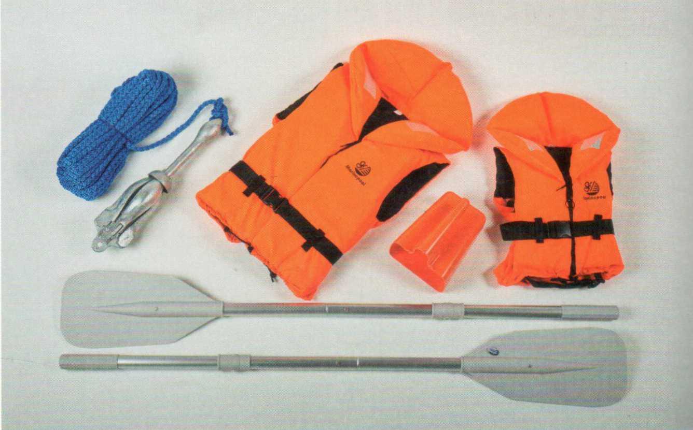
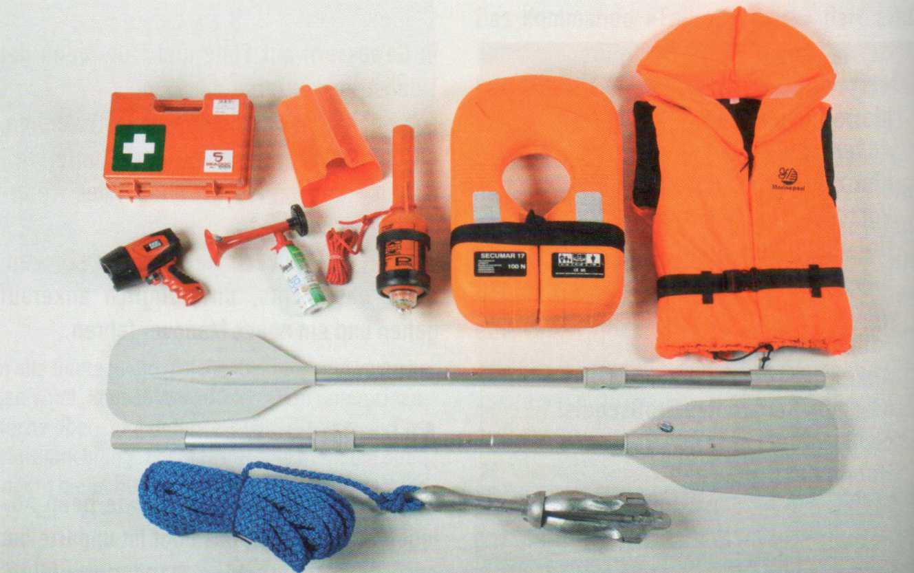
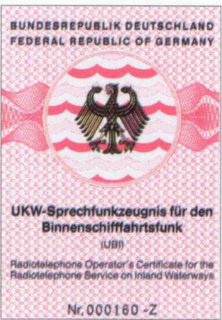

Es ist selbstverständlich, dass jeder an Bord bei unsicherer Wetterlage eine Rettungsweste anlegt. Kindertragen sie ständig. Im Gegensatz zur Schwimmweste, die nur als Schwimmhilfe dient, ist die Rettungsweste ohnmachtsicher. Das heißt, sie dreht einen Bewusstlosen in eine stabile Rückenlage und hält sein Gesicht über Wasser. Bewusstlosigkeit kann schnell durch Unterkühlung eintreten.
Schwimm- und Rettungswesten unterliegen einer Euro-Norm (EN) und Baumusterprüfung (CE-Kennzeichnung).
Es gibt ohnmachtsichere Feststoffwesten und luftgefüllte Westen, die durch CO2-Patronen aufgeblasen werden. Sie müssen mindestens alle 2 Jahre gewartet werden.
Auf größeren Revieren, besonders wenn auch bei Dunkelheit gesegelt wird, gehört zusätzlich ein ohnmachtsicherer Rettungskragen mit Rettungsleuchte an Bord.
In der kühleren Jahreszeit empfiehlt sich für Jollensegler, einen Nassbiber unterzuziehen. Er schützt vor schneller Auskühlung und dadurch bedingter Erschöpfung.
Anker mit Leine und Festmacher sind ebenso selbstverständlich wie Pütz oder Handpumpe, Reserveschäkel und -bändsel, Takelmesser mit Marlspieker zum Schäkelöffnen und ein Bootshaken.


Mindestausrüstung
Kategorie 1 - Jollen auf kleinen Binnenrevieren:
► Ohnmachtsichere Rettungsweste mit
Trillerpfeife für jedes Besatzungsmitglied (für Kinder spezielle Kinderweste)
► Ösfass (Pütz)
► Anker mit mindestens 20 m Leine
► 2 Stechpaddel
Kategorie 2 - Boote auf größeren Binnenrevieren zusätzlich zu dieser Grundausrüstung: ► Ohnmachtsicherer Rettungsring (Rettungsboje) mit automatischem Nachtrettungslicht
► Erste-Hilfe-Verbandskasten
► Wasserdichte und schwimmfähige Handlampe ► Signalhorn oder Typhon mit Handbedienung

Größere Boote mit Kocheinrichtungen, Elektrik und Einbaumotor müssen mindestens einen ABC-Pulver- und Schaumlöscher mit 2 kg Inhalt an Bord haben. Eine Füllmenge, die allerdings in höchstens 13 Sekunden verbraucht ist. Feuerlöscher müssen amtlich zugelassen sein. Eine Prüfplakette zeigt den Wartungstermin an (alle 2 Jahre). In speziellen Kursen kann man sich mit der Handhabung von Feuerlöschern vertraut machen. Feuerlöschdecken sind etwa 1 x 1 m groß und hervorragend geeignet, einen Entstehungsbrand zu ersticken.
Sie wirken nach dem Prinzip des Tripelspiegels der optischen Rückstrahler von Autos und Fahrrädern. Sie dienen dazu, kleinere Boote auf den Radarschirmen der Berufsschifffahrt zu erkennen, und sind für größere Boote unerlässlich.
Größere Yachten sind, häufig mit (UKW-) Sprechfunkanlagen ausgerüstet. Auf Binnenschifffahrtsstraßen dürfen diese nur benutzt werden, wenn sie der »Regionalen Vereinbarung über den Binnenschifffahrtsfunk« entsprechen. Das heißt unter anderem, mit ATIS (Automatic Transmitter Identification System) und für den Verkehrskreis Schiff-Schiff ausgerüstet sind.
Bei unsichtigem Wetter dürfen Sportboote nur dann fahren, wenn sie mit für die Binnenschifffahrt zugelassenem Radar und einer Sprechfunkanlage für den Binnenschifffahrtsfunk ausgerüstet sind.
Sie müssen auf Kanal 10 oder einem anderen zugewiesenen Kanal auf Empfang geschaltet sein. Voraussetzung ist, dass sich jemand mit UBI und Radarpatent an Bord befindet.
Das UKW-Sprechfunkzeugnis für den Binnenschifffahrtsfunk (UBI) erlaubt die Teilnahme am Funkverkehr binnen auf Wasserstraßen der Zonen 1-4. Für See ist eine Zusatzprüfung erforderlich. Mindestalter 15 Jahre.